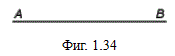
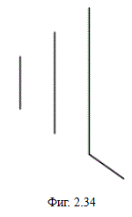
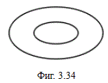
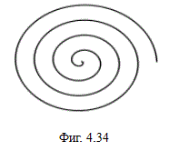

Беседа 2848 от 3877 · Беинса Дуно
Правата линия
Отче наш.
Имате ли зададена тема? – /Имаме./ – Четете. /Чете се темата „Взаимни отношения между хранене и дишане“./
Храненето и дишането това са два процеса. От хиляди години човек ги изучава не само на теория, но и на практическо приложение и хората още не са се научили да се хранят и да дишат, още се учат. Не е лесна работа човек да говори за дишането.
За втория път пишете: „Отношенията, които съществуват между жидката, твърдата и въздухообразната материя, какви промени стават?“
Вие имате да кажем песните: „Фир-фюр-фен“. Как започва тя? – /От „ре“/. Ако някой ви каже: „Фир-фюр-фен“, какво ще разберете? Ако някой пее „фир-фюр-фен“ с отворена уста и друг го пее много медлено, какво ще разберете между първото и второто пеене? Едното е бързо, другото е много медлено. Представете си, че вие проточите „фюр“, протакате тия работи, работите ще бъдат неразбрани. Да кажем, ако два предмета вие ги държите надалеч, че не може да имат отношение, картината ще бъде неясна. Та много философски въпроси са неясни, понеже не съвпадат.



Песента е един метод, който ретушира нещата. Ти чрез пеенето може да знаеш като един художник, който с четката, оттук вземе, оттам, смесва бои, тегли линии, погледнеш, направи една хубава картина. Музикантът и той по същия начин, и той като художника вземе една черта от „до“, запример, от „ре“, от „фа“, от „ми“. Няма изведнъж. Някъде вземе „до“, „ми“, какво ще направи? „До“ е червен цвят. Като смесваш червен и жълт цвят какво ще ви даде? – Оранжев, портокален. Портокаления цвят е цвят на индивидуализиране. Най-първо червения цвят дава подтик за живота, освобождава човека от известно ограничение. Под думата „индивидуализиране“ разбираме, когато в даден случай даваш оценка на една постъпка. Тази постъпка не може да оцениш. Ако не се индивидуализира, ако не се постави на място, няма смисъл. Ако една нота не я поставиш на известно място на петолинието, тя е без съдържание. Сега напишем една нота на една спомагателна линия. Сега може да кажем че е „до“. Въпрос е дали е „до“. Или можем да кажем „до“-то има една спомагателна линия. Но спомагателна линия има и „ми“. Спомагателна линия има и „сол“, после и „си“, и „ре“ имат спомагателна линия. Казваме, ако вече са написани на петолинието, имаме обикновен тон.
Една права линия в света. Правата линия в света, в природата е мярка за всичко. Това подразбира. Една права линия има в Божественото съзнание, която измерва всичко. Ако имаш тази права линия в себе си, тя ще ти даде мярка, може да се измерят всичките неща. Правата линия мери всичките работи. Когато казваме, че човек трябва да се движи, разбираме този Божествен импулс. Правата линия разрешава най-добре.

Сега приложението на закона. Вие имате една мисъл се върти във вашия ум или едно желание се върти във вашето сърце, или някоя постъпка се върти. Казвате: „Не мога да го постигна“. Щом не може да го постигнеш, единият край на твоята прашка не е свободен. Единият край трябва да се пусне. Да направя една аналогия. Да допуснем, че ти някой път искаш да завържеш известно приятелство. Въртиш тази идея в ума си. Искаш да имаш един приятел, но за да имаш един приятел, все таки се иска да му хвърлиш един камък да го удариш на място, да почувствува удара. Всеки един, който става приятел, той е все ударен. Сега ще ви докажа, че е ударяне. Ами този човек върви, тръгнал си по своята работа. Ти като въртиш, като го удариш в сърцето, обикне те. Той те удари, нарани те. След туй той ще дойде да лекува сърцето ти. Ти ще почувствуваш, че той ти е приятел. Казва: „Аз може да те нараня и може да те лекувам“. Това е само за изяснение, но идеята е права. Онзи, който искаш да ти бъде приятел трябва да го удариш в сърцето. Да го удариш, но да му е приятно. Светлината като иде от слънцето все ни удря. Като влезе в окото удря, но нейният удар е музикален, че произвежда един цвят, произвежда някоя идея. Пък има удари в света безидейни. Казвам: Движението на приятеля ще произвежда разумни действия в нас. Сега не е толкоз удрянето, но все таки падането на един слънчев лъч ще произведе един удар. Някой път светлината, която иде произвежда дразнение, един удар, който не е приятен.
Сега да ви наведа един пример. Ако една граната падне върху един твърд предмет, веднага избухва, но ако падне в мека почва, някой път гранатата не избухва. Слънчевите лъчи, ако паднат на една камениста почва, какво ще произведат? И ако паднат на една мека почва, какъв ще бъде резултатът? Че на каменистата почва като паднат, камъните ще се сгорещят, като паднат на меката почва, тя ще произведе известни растения, ще роди растителността. Растения ще се появят. Та казвате: „Защо човек може да бъде мек?“ Защото мекотата в човека е един събирателен процес. Ти със своята мекота събираш нещата, а със своята якота ти ги отблъскваш. При твърдите тела има този процес да отблъскват нещата. Меките ги възприемат. Казвам сега: И в закона на възприятието има една мекота, която задържа нещата. Сега водата каква е, мека ли е? Когато един камък падне във водата, отваря му място. Този камък падне на дъното. Ние под думата „мекота“, разбираме, мекота, която задържа нещата. Мекият човек задържа по-дълго време нещата в себе си, отколкото грубият човек.
Сега, каква е вашата идея? Казвате вие понякой път, че сте груб. Какви са външните черти на грубия човек? Вие сте изучавали физиогномия. Мъчна работа е да се определи. Общо казано е груб човек. Груб е човек в постъпките си. Пушката сама по себе си е груба, но ако няма груб материал в нея, тя не може да се прояви. Кой е грубият материал на пушката? Барутът. Този барут, след като се тури в пушката, барутът и пушката дойдат на един ум, имат туй разширение, запали се, а пък пушката е тъй направена, че не му дава да се разширява навсякъде, ами ще го ограничи, ще го пусне само в едно направление. Че като се съединят тия, двамата души, барутът и пушката, пушката го прати по права линия. Ще дойде умният човек, ще я тури на рамото и той ще насочи накъде трябва да върви. Има още едно твърдо тяло, което пази барутът да не излезе навън. Този, твърдият сега, грубият барут, грубата пушка, грубият, който седи вътре и грубият човек, който държи пушката. Най-първо, самата пушка е груба, човекът, който държи е груб, барутът, който е вътре е груб. Куршумчето е грубо. Четирима души, като се съберат на едно място /и/ още един фактор, като дойде огънят да уйдиса на тяхния ум. Че той ще дойде отнякъде, като запали барута, той ще стане петият елемент. Най-после имат някаква цел, наранят някой човек. Откъде излезе огънят тогава? Какъв е произходът на огъня? Съвременните учени хора какво казват за огъня? От триенето става. Но в природата откъде иде огънят? Огънят иде от любовта. Дето има огън, има любов, дето няма огън, няма любов. Има любов, дето има светлина и топлина.
Та казвам: Правата линия. Казваме ние: „Прав човек“. Винаги любовта върви по права линия. Знанието и то върви по права линия. И свободата и тя върви по права линия. Три неща вървят по права линия. Всичко, което излезе от любовта и то върви по права линия. Пък всичко, което се отклонява от любовта, от мъдростта, от истината, по крива линия върви. Всяко отклонение от правата линия дава крива линия. Да допуснем, че ти искаш да вървиш по права линия, искаш да видиш Бога. Най-първо виждаш, че няма резултат. Богат си, искаш да бъдеш щедър. Дойде един, даваш, дойде втори, даваш, най-после никой не иде да ти благодари, от тези, които взели. Ти казваш: „Няма да давам вече“. Щом решиш да не даваш, какво е това състояние, по каква линия вървиш? – То е крива линия. Правата линия отива в центъра, а с кривата линия не се постига целта. Човек върви в кривата линия. Кривите линии са за продължение на времето. Когато един ученик не иска да учи, той продължава времето, по криви линии върви. Прилежните ученици искат бързо да свършат. Онези, които не са прилежни, искат по криви линии да вървят. Една, две, три, четири години подир другите. Не стигат успешно другите. Ленивите ученици вървят много бавно. Те въртят прашката и ако не може да я отпусне, всичкото въртене на прашката остава напразно. Представете си, че вие 120 години въртите една прашка и след 120 години се оставите. Питам, ако след 120 години отпуснеш краят на прашката, какво ще придобиеш? Представете си, че вие държите една череша до следната година, докато дойдат нови череши. Като дойдат нови череши, тая череша, която вие носите каква ще бъде? До идната година, като държите тая череша на какво ще замяза вашата череша? Ще остане костилката на черешата и от месото на тази череша ще остане много малко. Като дойдат новите череши, вие ще ядете ли старата череша или нови ще ядете? Кои ще опитате по-рано? – Новата.
Не оставайте вашите стари идеи да дойдат до новите идеи. В съвременния свят вие искате да примирите старите идеи, старите ваши понятия на живота с новите. Тия неща не може да се примирят. Всяко нещо има свое време. Не отлагайте нещата. Казвате: „В някое друго прераждане“. Ти при сегашното възпитание не отлагай за една година. Една мярка имай, денят. Ние туряме за цяла седмица. Днес! Отсега до довечера, каквото направиш, туй е. Днес, ако не е, като заспиш, утре като станеш, пак ще кажеш, днес, за един ден. Не казвай, след една седмица, или след една година, или след един месец. Кога трябва да турите за една седмица? Да кажем искате да направите едно добро. След колко време трябва да го направите? Още днес трябва. Искаш да пееш. Още днес ще пееш. Ти чакаш да се научиш да пееш, че да излезеш на сцената. Днес пей. По-добра публика от тебе няма. Някои певци искат да имат публика. По-добра публика от самия певец няма. Онзи, ако на себе си не може да пее, не може да пее и на другите. Ако вие разсъждавате, че една ваша мисъл, ако не е приятна на вас, тя не може да бъде приятна и на другите. Туй, което е добро за вас е добро и за другите. Туй, което не е добро за самите вас, не може да бъде добро и за другите. Искате да направите едно добро. Направете го най-първо на себе си. Единствения човек, който може да оцени доброто, то сте вие самият в дадения случай. Ако туй добро е добро за вас, то ще бъде добро и за другите. Вие искате да дадете някому череши. Най-първо опитайте ги вие. Ако вас ви са приятни, сочни, дайте ги на другите. Но, ако вие сами не харесвате черешите, не ги давайте на другите, не ги убеждавайте, хвърлете ги. Ако искате да напишете едно писмо на един ваш приятел, напишете го. Ако на вас ви хареса и вашият приятел ще го хареса. Да допуснем, че вие пишете тъй: „От всичките хора на земята най-много обичам вас“. Пишете ли истината? Човек никого не може да обича. Казвате: „Аз ви обичам повече от себе си“. Това не е вярно. То не е вярно, понеже един извор, ако искате да го прекарате някъде, този извор не може да се подигне повече от нивото, на което извира. Ти не може да обичаш другите хора повече от себе си. В тебе няма никаква възможност. Ти може да ги обичаш, колкото себе си обичаш. Пък някой път може да ги обичаш по-малко, малко по-малко от себе си. Пък ти не си виновен. Сега графически това може така да ви го представя. Имате един извор, който прекарвате през няколко плоскости. Ако го прекарате през разните плоскости, силата ще бъде ли една и съща? Да кажем, че вие обичате някого, той се намира на четвъртата линия, или ако се намира на първата линия, на уровена на който сте вие, или ако се намира на втората или на третата линия, все по един и същи начин ли ще го обичате? Представете си, че той е по-учен от вас, друг е малко по-учен и третият е още по-малко учен. Питам: Вашата вода, която минава, ако отива при умния, ако отива при този, който не е учен и ако отива при простия, има ли някакво различие във водата, която им пращате? Ако напишете еднакво писмо и на четиримата, които не са еднакво учени, те ще оценят ли еднакво писмото? Те и да искат да го оценят няма да могат, понеже няма да има разбиране. Кой ще бъде, който ще оцени писмото? Първият, който е на същият уровен с вас. Тогава, какво ще бъде състоянието на втория, на третия и на четвъртия? В музиката вие пишете нотите на петолинието. Може ли една нота от първата линия да се покачи на четвъртата?
Сега понякой път вие се спирате и казвате: „Кажи ни същественото“. Ето казвам ви. Ти седиш и му разправяш за хубавите череши. Казва: „Покажи ми, дай ми същественото“. Значи, бръкни в торбата си, пък ми дай същественото. Като говориш за същественото, бръкни в торбата, извади, дай на тия хора. Те в дадения случай ще имат много по-вярна представа, отколкото ако ти им разправиш за черешите. Има един свят на опит. Така ти ще се освободиш от известни описателни работи. Като дадеш, те всичките разбират какво е. Казва сега, че човек не трябва да решава. Казва: „Аз искам да бъда добър“. Под думата „добър“, разбираме носи туй реалното в себе си. Човек е като една книга, в която всичко се пише. Онова, което човек преживява, всичко се пише в съзнанието. Ако е едно добро, или ако е една добра постъпка, или какъвто и да е идеал, ако го имате, ако този идеал няма никакъв модел, не е написан, ако не е във вашето съзнание, вие не може да го реализирате никъде. Значи всички неща, които са написани в нашето съзнание, ние може да ги реализираме. Следователно, говорим за неща, които са написани. Има едно обикновено съзнание, има едно подсъзнание, самосъзнание и свръхсъзнание. Какво разбираш? Подсъзнанието е в низшето царство на природата. Съзнанието е в животинското царство. Самосъзнанието е в човешкия свят и свъхсъзнанието е животът на ангелите. Имаме четири съзнания. Съзнанието е процес на животните, самосъзнанието е процес на нашия живот, ние самосъзнаваме. Свръхсъзнанието, това е процес на напредналите същества. От обикновен човек те имат туй свръхсъзнание. Едновременно в нас подсъзнанието го има като нещо минало, съзнанието е в животинското царство, самосъзнанието ще го видим в себе си. Свръхсъзнанието го считаме като нещо в бъдеще, което ще го опитаме. От туй свръхсъзнание вече има известни зачатия в нас. Някои въпроси ще ги разрешите по образа на подсъзнанието, някои по образа на съзнанието, някои по образа на самосъзнанието и някои по образите на свръхсъзнанието. Представете си сега, че имате четирима души певци. Първият е гениален, вторият е талантлив, третият е обикновен, а четвъртият е бездарник. Талантливият, като ви изпее една песен, колко ще му дадете. Ха да кажем, изпей българската песен „Цвете мило, цвете красно“, на гениалния, колко ще му дадете?
При един английски милиардер отишъл един европейски музикант, давал концерт, но той като пристигнал, концертът бил свършен. Отива в хотела дето спрял музикантът и му казва, че иска да го чуе. Онзи казва: „Не може“. Казва, че сто долара ще му даде, онзи не иска да свири двеста дава, пак не иска да свири. Давам казва, хиляда долара. Онзи му свирил. След като го чул казва: „Дай и аз да ти посвиря малко“. Гениалният за сто, двеста, триста долара не свири, но след като му дал хиляда долара, става от леглото и му свири. Казва: „Дай аз да ти посвиря, да си дадеш мнението как аз свиря“. Аз ви говоря за неща, които са реални. Някой път вие искате да опитате някой човек колко е добър. Отивате там, пък и вие искате да покажете вашето добро. Аз да ти покажа, дай ми цигулката! И аз да ти покажа колко съм добър.
Та човек все трябва да направи някакви жертви. Правата линия, която действува в даден момент. Някои хора са успешни, защото действуват по права линия. Никога не отлагайте нещата. Никога не отлагай една права мисъл. Щом дойде да искаш да пееш, не отлагай нито минута. Като ви дойде на ум не отлагай, след 1 час, след половин час. Никога хубавото, което ти дойде по пътя не отлагай. Ти отклоняваш водата, не чакай да дойде от някъде благоприятно. Хубавото още на пътя започни. Доброто като дойде, каквато и да е добра мисъл не отлагай. За лошото е друг въпрос. Всеки човек, който иска да има полза, като дойде една хубава мисъл, едно хубаво чувство, една хубава постъпка, в даден случай, не отлагай! Всякога отлагането носи в себе си лоши последствия. Защото този момент, ако не го използуваш, за другия момент има други /условия/. В природата, като ти дойде една мисъл, приложи я в този момент, защото за следния момент има друга мисъл. Тогава другата остава неопитана. Не отлагай! Дойде една мисъл, приложи я. Дойде втора, трета, приложи я. Те идат по един разумен път. От отлагането на нашите идеи се е образувала нашата карма. Когато някои говорят „карма“, аз разбирам отлагане на добродетелите на хубавите работи. Щом отлагаш хубавите работи, кармата иде. Отлагаш, отлагаш, някога в бъдеще ще поправяш тия работи. Може да се поправят, но най-добре е сега да се реализират. Не отлагайте каквато и да е хубава мисъл. Всяка една мисъл, която дойде, тя има време за реализиране. Дойде ти нещо да начертаеш, започни, начертай го, в дадения случай не отлагай, след един час, след един ден, след една седмица. След като отложите кажете: „Не излезе сполучливо“. Всякога нещата стават несполучливи, когато се отлагат. Ако започнеш точно на време, ще бъдат сполучливи.
Аз съм дал следния пример и досега не може да разберете примера. Един баща често пътувал с трена. Един ден както машината засилено иде, дете си играло на линията и бащата само извикал: „Лягай!“ Като каже: „Лягай!“, лягай. Защо така, не питай. „Лягай“, то значи идея. – Ама защо трябва да легна? – Лягай! Лягай. – Ставай! Ставай. – Бягай! Бягай. – Мисли! Мисли. Значи в дадения случай туй значи идея.
Има неща, които са извън времето и пространството. Не питай: „/Защо да/ лягам?“ Лягай. Като мине локомотивът, след туй може да мислиш какво щеше да бъде, ако не беше легнал. Но в дадения случай, като легнеш, постига се целта. Детето е живо. Бащата се радва, че детето го послушало. Казвам: Когато ви кажат: „Лягай!“, лягай, когато кажат: „Ставай!“, направете работата. Две неща: лягай и ставай. Ако легнеш навреме ще спасиш живота си, ако не легнеш навреме, отиде животът. Лягай и ставай, те са два процеса опасни. Опасност има, лягай. Ставай, опастността е минала.
Тогава аз разбирам „да“ и „не“. – Лягай! – Не. – Ставай! – Да. Щом кажеш нещо „не“, никога не отменявай. Хайде да идем да пием в кръчмата! – Не. – Да излезем от кръчмата! – Да. Казвам: Ако сега човек може да употреби „да“ и „не“ на място, той е спасен. Защото животът във всинца ви има изкушения. Вие се намирате в два свята. Между два вида същества, които са заинтересовани. Едните искат да ви съблазнят, понеже от всяка съблазън печелят. Другите искат да ви избавят от съблазън, понеже като ви избавят и те печелят. Когато вие грешите, първите печелят. Когато вие не грешите, вторите печелят. Едните искат всякога вие да не грешите, те да печелят, другите искат вие всякога да грешите, те да печелят. И едните, и другите искат да печелят нещо от вас. Вие на едните ще кажете „не“, на другите ще кажете „да“.
Само светлият път на Мъдростта води към Истината!
В Истината е скрит животът!
ХVII година
34 лекция на Младежкия окултен клас
държана от Учителя на 3. VI. 1938 г., петък, 5 ч.с.
София – Изгрев.